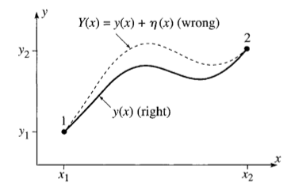
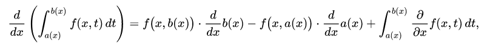
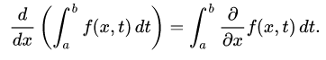

Table of Contents
Motivation
I have had to convinve myself that this is true a few times over the years, so now it's here to stay forever or at least until I forget to pay for my web hosting again.
Derivation
Consider some arbitrary path of length \(S\) from points \(p_1\) to \(p_2\) denoted as \(y(x)\)
A variation of that path could be considered, denoted as \(Y(x) = y(x) + {\eta}(x)\) such that its endpoints match exactly those of the original path.
\({\implies} {\eta}(x_1) = {\eta}(x_2) = 0\)

Figure 1: Our two paths
For any choice of a constant coefficient \(\epsilon\) and for any higher power polynomial factor that has the same boundary conditions, there is a path variation. Thus, there are infinitely many choices for the additional path. \[Y(x) = y(x) + \epsilon{\eta}(x)\] To convince yourself of this, here is a Demos visualization to play around with.
For any such variation, an expression for a differential length of that path is given by:
\[ dS = {\sqrt{ {dx^2} + {\left({dY(x)} \right)}^2 }}\]
This is just the pythagorean theorem with hypotenuse \(dS\). Accordingly, the assumption of this metric underpins the derivation.
Distributing out a \(dx^2\)
\[ dS = dx{\sqrt{ {1} + {\left({\frac{dY}{dx}} \right)}^2 }}\]
\[ S = \int_{x_1}^{x_2} dx{\sqrt{ {1} + {\left({\frac{dY}{dx}} \right)}^2 }}\]
Nature is continuous and reasonably well behaved most of the time. If our additional path is too, then it's differentiable. For a differentiable function, its local minima or maxima (extrema) occur where its first derivative is zero according to Fermat's theorem. So, if we differentiate with respect to the variable coefficient, we would find an extremum for an arbitrary additional path function.
Abstracting out to a general case:
\[ I = \int_{x_1}^{x_2} F\left( x, y, {\frac{dY}{dx}} \right) dx\]
The derivative of this integral is possible assuming the criteria for Leibniz's integral rule holds and is evaluated as:

Figure 2: Check out wikipedia: Leibniz integral rule and Fubini's theorem, which it's dependent on
And since our bounds \(x_1\) & \(x_2\) are constants, it reduces to:

\[{\frac{dI}{d {\epsilon}}} = \int_{x_1}^{x_2} \left( \frac{\partial F}{\partial x }\frac{\partial x}{\partial \epsilon } + \frac{\partial F}{\partial Y }\frac{\partial Y}{\partial \epsilon } + \frac{\partial F}{\partial \frac{dY}{dx} }\frac{\partial \frac{dY}{dx} }{\partial \epsilon } \right) dx = 0\]
Just taking the partial derivatives of \(Y(x) = y(x) + \epsilon{\eta}(x)\)
\[\frac{\partial x}{\partial \epsilon } = 0\]
\[ \frac{ \partial Y(x)}{\partial \epsilon} = \eta (x) \]
\[\frac{dY(x)}{dx} = \frac{dy(x)}{dx} + \epsilon \frac{d \eta (x)}{dx}\] \[ \frac{ \partial \frac{dY(x)}{dx}}{\partial \epsilon} = \frac{d \eta (x)}{dx} \]
Substituting results into original integral and switching over to prime notation for our eta function to save digital chalk, make it more readable and match convention:
\[{\frac{dI}{d \epsilon}} = \int_{x_1}^{x_2} \left( 0 + \frac{\partial F}{\partial Y(x) } \eta (x) + \frac{\partial F}{\partial Y^{\prime}(x) } \eta^\prime(x) \right) dx\]
\(\int_{x_1}^{x_2} \frac{\partial F}{\partial Y^{\prime}(x) } \eta^\prime(x)\) can be reformulated through integration by parts:
\[\int_{x_1}^{x_2} \left( \frac{\partial F}{\partial Y^{\prime}(x) } \eta^\prime(x) \right) dx = \frac{\partial F}{\partial Y^{\prime}(x) } \eta (x) \bigg\rvert_{x_1}^{x_2} \ -\int_{x_1}^{x_2} \frac{d}{dx} \frac{\partial F}{\partial Y^{\prime}(x)} \eta (x) dx\]
Since our additional path function matches the endpoints of our our original path, \(\eta(x_1) = \eta (x_2) = 0\)
\[\frac{\partial F}{\partial Y^{\prime}(x) } \eta (x) \bigg\rvert_{x_1}^{x_2} \ = 0\]
\[\implies \int_{x_1}^{x_2} \left( \frac{\partial F}{\partial Y(x) } \eta (x) + \frac{\partial F}{\partial Y^{\prime}(x) } \eta^\prime(x) \right) dx = \int_{x_1}^{x_2} \left( \frac{\partial F}{\partial Y(x) } \eta (x) + \frac{d}{dx}\frac{\partial F}{\partial Y^{\prime}(x)} \eta (x) \right) dx = 0 \]
\[ = \int_{x_1}^{x_2} \left( \frac{\partial F}{\partial Y(x) }+ \frac{d}{dx}\frac{\partial F}{\partial Y^{\prime}(x)} \right) \eta (x)dx = 0 \]
This must be true for any arbitrary \(\eta (x)\). The only way for this to be possible is if:
\[\frac{\partial F}{\partial Y(x) }+ \frac{d}{dx}\frac{\partial F}{\partial Y^{\prime}(x)} = 0\]
This is the Euler-Lagrange equation.
Note that this reasoning only guarantees that the path's length is stationary – not necessarily a minimum or a maximum.